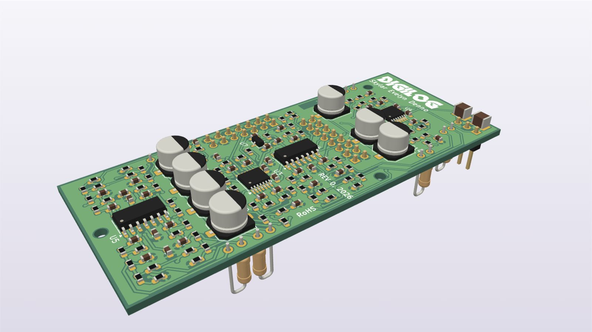
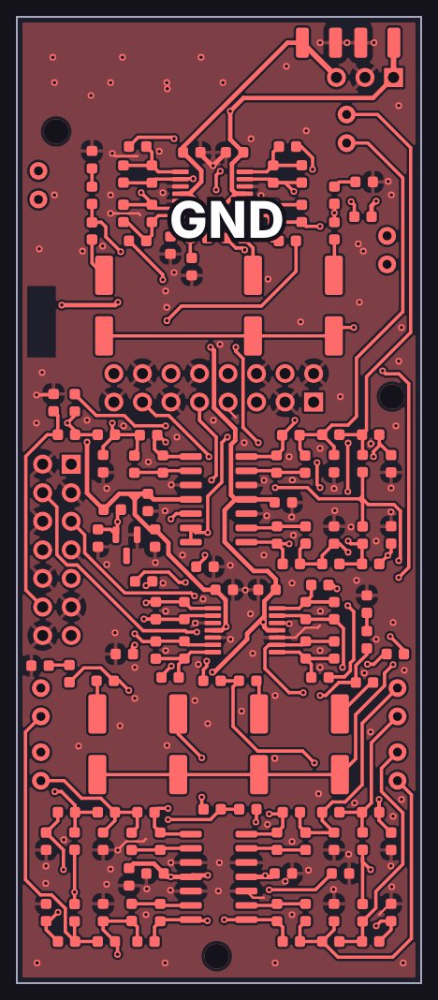
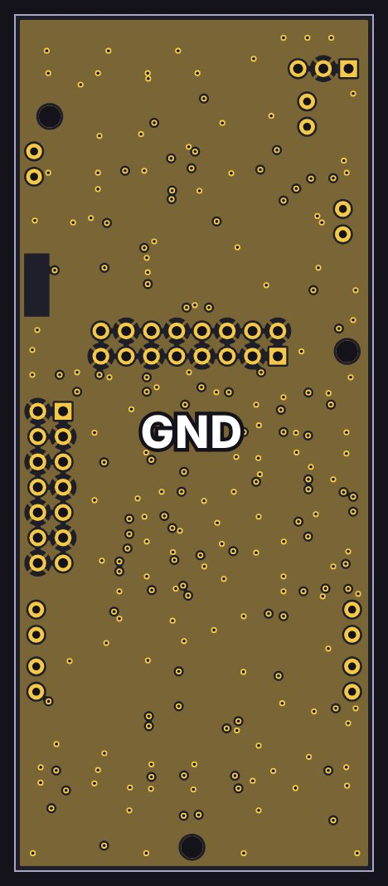
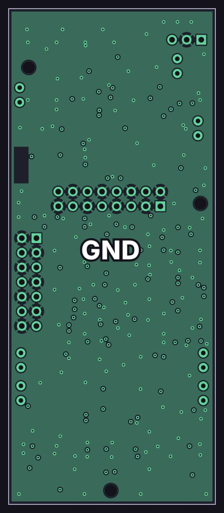
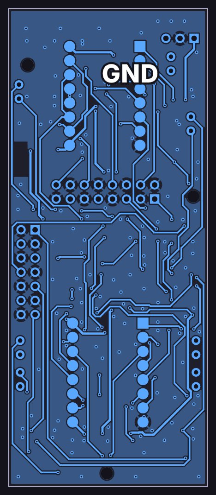
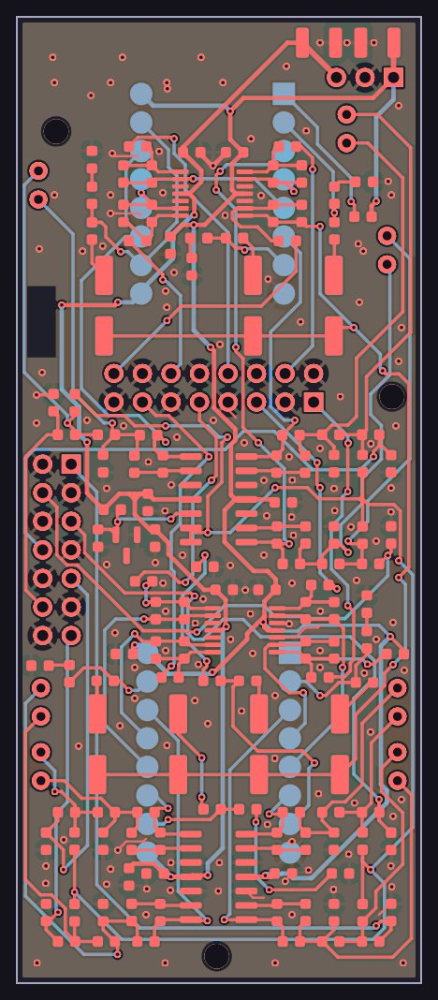

Sends card

How it works
A simplified schematic: just the signal path, with the details left out. Dashed lines are control voltages from the console’s controller.
The copper layers
All 4 copper layers of the board, top to bottom, drawn from the KiCad layout: 2 signal layers and 2 ground planes, labeled GND.
-

Top F.Cu
Signal layer: parts, signal traces and +15 V, −15 V, −2.5 V power traces
-

Inner 1 In1.Cu
Ground plane (GND)
-

Inner 2 In2.Cu
Ground plane (GND)
-

Bottom B.Cu
Signal layer: signal traces and +15 V, −15 V, −2.5 V power traces
-

All layers
Every copper layer stacked, top on top